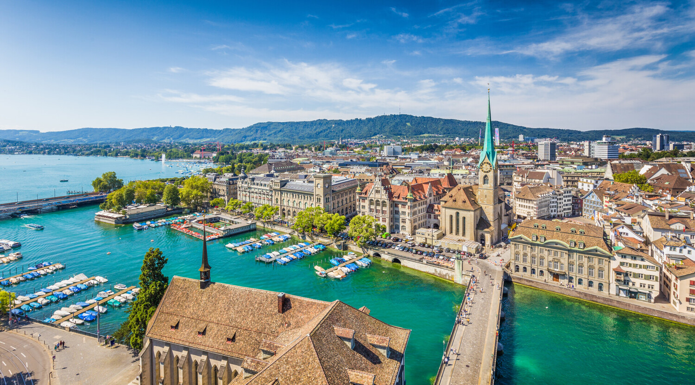
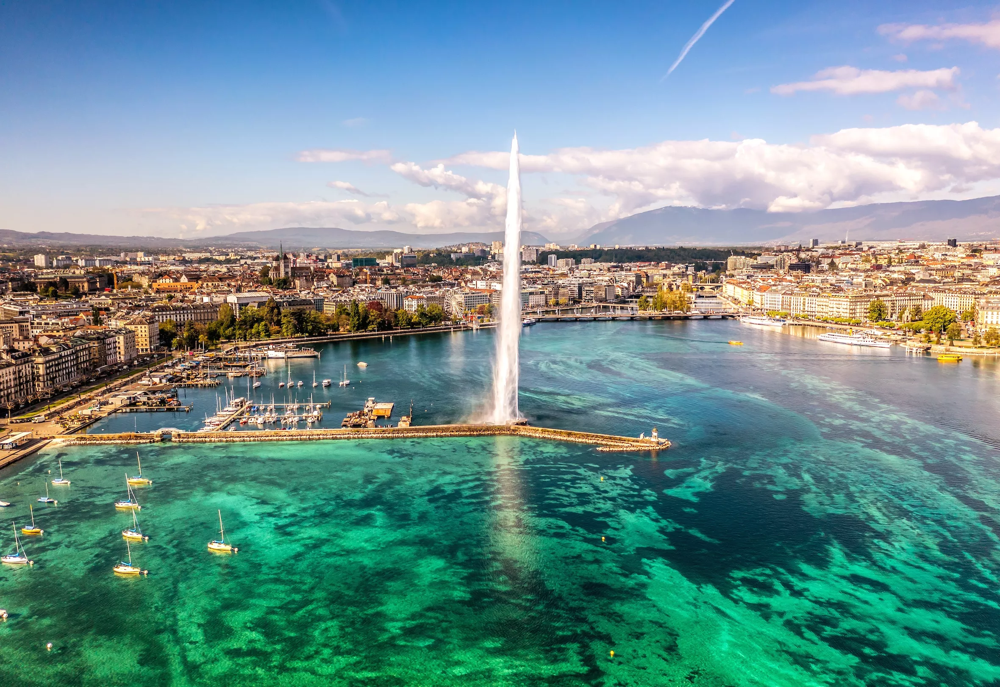
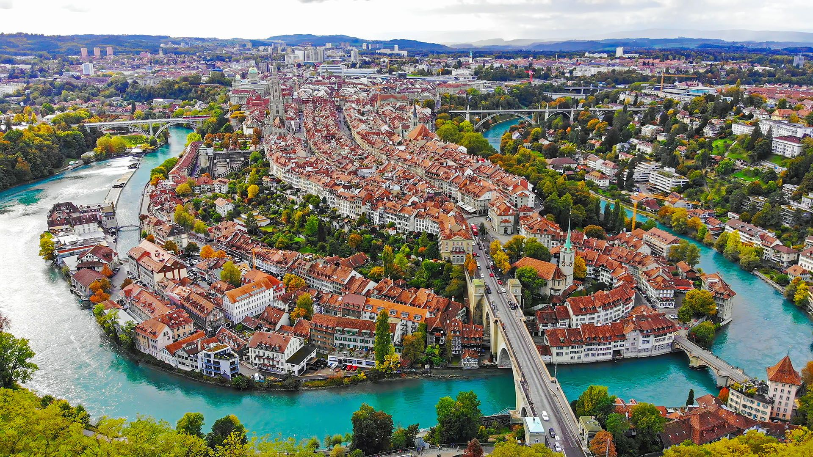
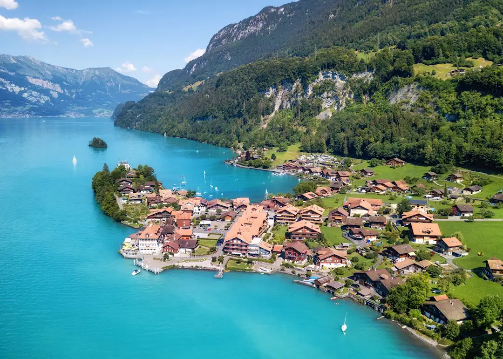
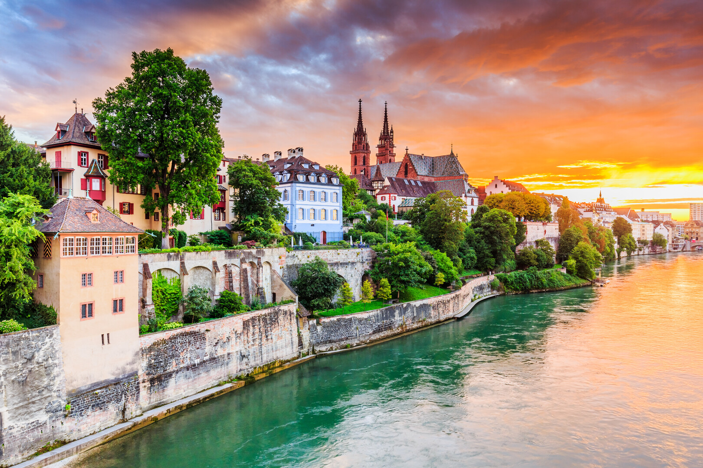
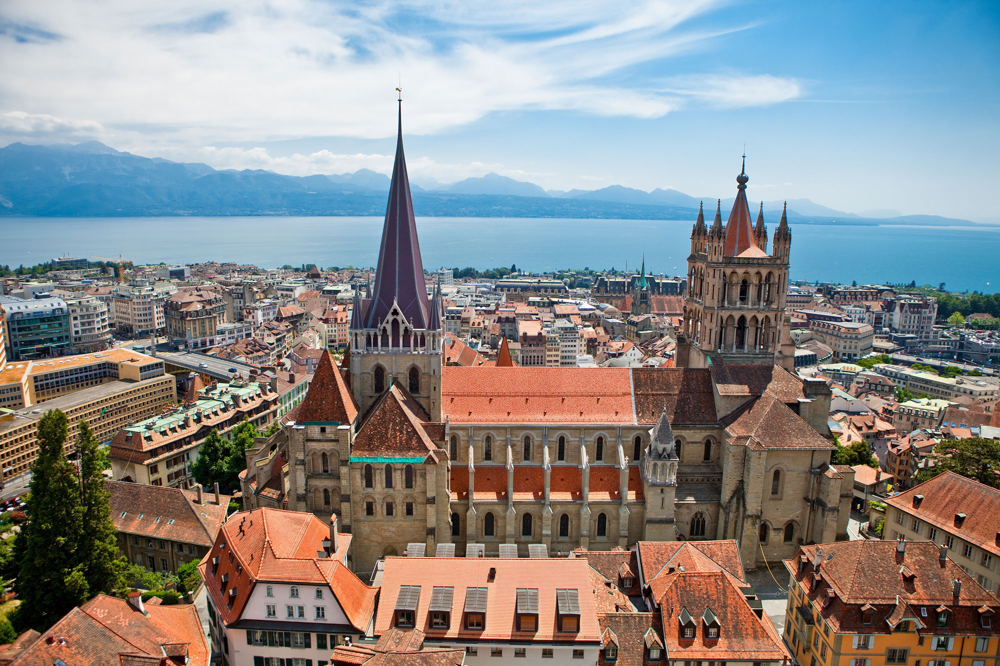
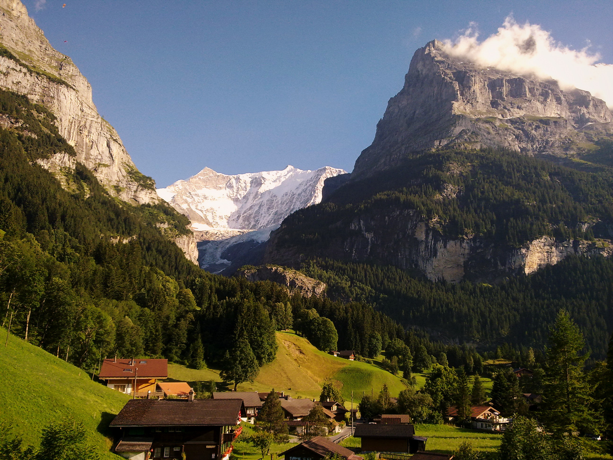

Switzerland is a small country packed with world-renowned destinations. Whether you're drawn to buzzing cities, quiet Alpine villages, or dramatic natural landscapes, there is a destination waiting for you.
Must-Visit Regions

Zurich
Switzerland's largest city blends finance and fashion with a vibrant arts scene and incredible lakeside setting.

Geneva
An international hub on the shore of Lake Geneva, home to the UN and extraordinary fine dining and watches.

Bern
The federal capital, a UNESCO World Heritage city known for its medieval arcades and the famous bear park.

Zermatt
Car-free mountain village at the foot of the Matterhorn — a bucket-list destination for hikers and skiers alike.

Lucerne
A fairytale city on the lake, famous for its covered Chapel Bridge, the oldest wooden bridge in Europe.

Interlaken
Adventure capital of Switzerland set between two lakes and beneath the Bernese Alps. Perfect for thrill seekers.

Basel
Cultural powerhouse on the Rhine, home to over 40 museums, Art Basel, and a stunning medieval old town.

Lausanne
A hilly, energetic city overlooking Lake Geneva with a rich Olympic heritage and excellent wine country nearby.

Grindelwald
Charming village below the Eiger in the Bernese Oberland — gateway to some of Switzerland's finest hiking.